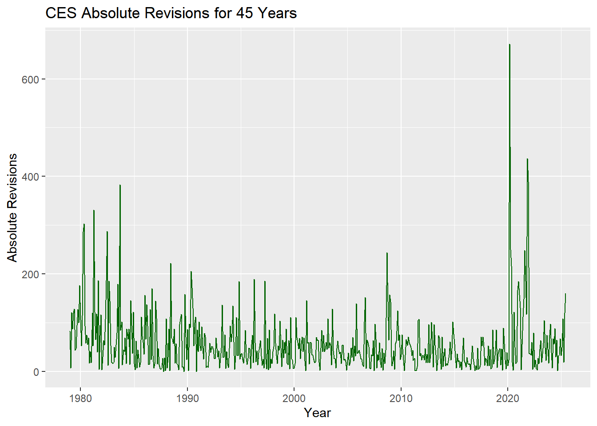
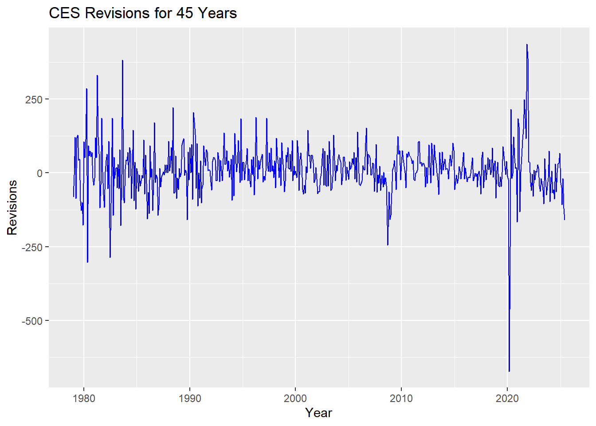
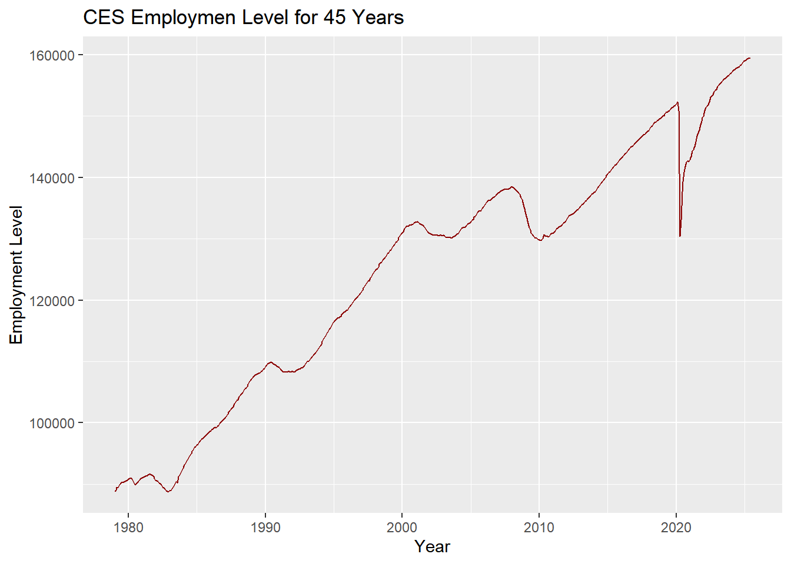
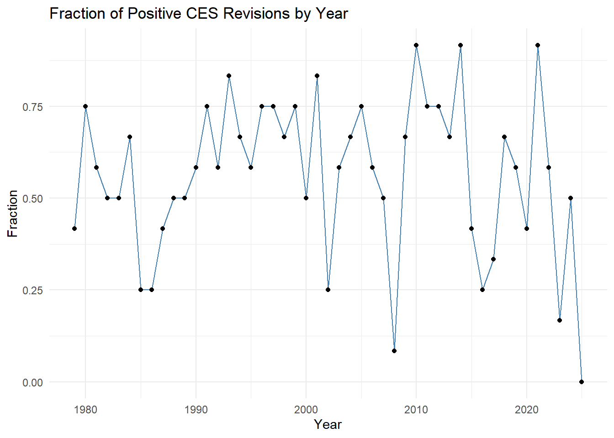

library(httr2)
library(rvest)
library(dplyr)
library(tidyr)
library(stringr)
library(readr)
library(lubridate)
web <- request("https://data.bls.gov/pdq/SurveyOutputServlet") |>
req_method("POST") |>
req_body_form(request_action = "get_data",
reformat = "true",
from_results_page = "true",
from_year = "1979",
to_year = "2025",
`Go.x` = "19",
`Go.y` = "3",
initial_request = "false",
data_tool = "surveymost",
series_id = "CES0000000001",
original_annualAveragesRequested = "false") |>
req_perform() |>
resp_body_html() |>
html_elements("table") |>
html_table(fill = TRUE)
data <- web[[2]]
result <- data |>
mutate(Year = as.integer(Year)) |>
pivot_longer(cols = -Year,
names_to = "Month",
values_to = "level") |>
mutate(level = parse_number(level),
Month = factor(Month, levels = month.abb),
date = make_date(Year, as.integer(Month), 1)) |>
drop_na(level) |>
filter(date <= as.Date("2025-06-01")) |>
select(date, level)Mini Project 4
Task 1: Download CES Total Nonfarm Payroll
Task 2: Download CES Revisions Tables
The following code shows the desired data from the 2024 table.
library(purrr)
library(DT)
rev_req <- request("https://www.bls.gov/web/empsit/cesnaicsrev.htm") |>
req_user_agent("Mozilla/5.0 (Macintosh; Intel Mac OS X 10.15; rv:143.0) Gecko/20100101 Firefox/143.0") |>
req_perform()
rev_html <- rev_req |> resp_body_html()
parse_revisions_year <- function(year, html = rev_html) {
tbl_raw <- html |>
html_element(xpath = glue::glue("//table[@id='{year}']")) |>
html_element("tbody") |>
html_table(header = FALSE, fill = TRUE)
tbl_months <- tbl_raw |>
slice_head(n = 12)
tbl_clean <- tbl_months |>
select(month = 1,
year = 2,
original = 3,
final = 5) |>
mutate(month = str_trim(month),
month = str_remove(month, "\\.$"),
year = as.integer(year),
original = as.integer(original),
final = as.integer(final),
date = ym(paste(year, month)),
revision = final - original) |>
select(date, original, final, revision)
tbl_clean
}
CES_revisions_2024 <- parse_revisions_year(2024) |>
datatable(options = list(searching = FALSE, info = FALSE))
CES_revisions_2024The following code will show the result of all years from 1979 to 2025.
CES_revisions <- map_dfr(1979:2025, \(yy) {
parse_revisions_year(yy)
}) |>
filter(date <= as.Date("2025-06-01"))Task 3: Data Exploration and Visualization
The following code joined two table together.
joined_CES <- result |>
left_join(CES_revisions, by = "date")1. What was the largest revisions over the past 45 years?
Code
joined_CES |>
arrange(desc(revision)) |>
head(1) |>
datatable(options = list(searching = FALSE, info = FALSE))From the above data table, we can conclude that the largest revision occured on 2021-11-01, with revision being 437.
2. What was the smallest revisions over the past 45 years?
Code
joined_CES |>
arrange(revision) |>
head(1) |>
datatable(options = list(searching = FALSE, info = FALSE))From the above data table, we can conclude that the smallest revision occured on 2020-03-01, with revision being -672.
3. What is the mean absolute revision over the past 45 years?
Code
joined_CES |>
summarize(`Mean Absolute Revision` = mean(abs(revision))) |>
datatable(options = list(searching = FALSE, info = FALSE))From the above data table, we can conclude that the mean absolute revision is roughly 56.90.
4. What is the fraction of the mean revision over the employment level?
Code
joined_CES |>
summarize(`Fraction of Mean Revision Over The Employment Level` = mean(abs(revision) / level) * 100) |>
datatable(options = list(searching = FALSE, info = FALSE))From the above data table, we can conclude that the fraction of the mean revision over the employment level is roughly 0.048, which is roughly 4.83% in percentage.
5. What is the range of revisions over the past 45 years?
Code
joined_CES |>
summarize(`Range of Revisions` = max(revision) - min(revision)) |>
datatable(options = list(searching = FALSE, info = FALSE))From the above data table, we can conclude that the range of revisions over the past 45 years is 1109.
6. What fraction of CES revisions are positive in each year?
Code
joined_CES |>
mutate(year = year(date)) |>
group_by(year) |>
summarize(`Fraction of Positive Revisions` = mean(revision > 0)) |>
rename(`Year` = year) |>
datatable(options = list(searching = FALSE, info = FALSE))The fraction of CES revisions being positive in each year is shown above.
7. How has the CES employment level changed over the past 45 years?
Code
library(ggplot2)
ggplot(joined_CES, aes(date, level)) +
geom_line(color = "darkred") +
labs(title = "CES Employmen Level for 45 Years") +
xlab("Year") +
ylab("Employment Level")
8. How has the CES revisions changed over the past 45 years?
Code
ggplot(joined_CES, aes(date, revision)) +
geom_line(color = "blue") +
labs(title = "CES Revisions for 45 Years") +
xlab("Year") +
ylab("Revisions")
9. How has the CES absolute revisions changed over the past 45 years?
Code
ggplot(joined_CES, aes(date, abs(revision))) +
geom_line(color = "darkgreen") +
labs(title = "CES Absolute Revisions for 45 Years") +
xlab("Year") +
ylab("Absolute Revisions")
10. How has the fraction of positive CES revision in each year changed over time?
Code
joined_CES |>
mutate(year = year(date),
positive_revision = revision > 0) |>
group_by(year) |>
summarize(fraction = mean(positive_revision)) |>
ggplot(aes(x = year, y = fraction)) +
geom_line(color = "steelblue") +
geom_point() +
labs(title = "Fraction of Positive CES Revisions by Year") +
xlab("Year") +
ylab("Fraction") +
theme_minimal()
Task 4: Statistical Inference
1. Is the average revision significantly different from zero?
Code
library(infer)Warning: package 'infer' was built under R version 4.5.2Code
t.test(joined_CES$revision, mu = 0)
One Sample t-test
data: joined_CES$revision
t = 3.2594, df = 557, p-value = 0.001185
alternative hypothesis: true mean is not equal to 0
95 percent confidence interval:
4.568889 18.427526
sample estimates:
mean of x
11.49821 From the above t-test, since the p-value is 0.001185 < 0.05, we can conclude that there is strong evidence against the null hypothesis, suggesting that the average revision is not zero.
2. Has the fraction of negative revisions increased post-2000?
Code
joined_CES |>
mutate(year = year(date),
negative_revision = revision < 0,
period = if_else(year < 2000, "pre2000", "post2000")) |>
prop_test(negative_revision ~ period,
alternative = "greater",
order = c("pre2000", "post2000"))# A tibble: 1 × 6
statistic chisq_df p_value alternative lower_ci upper_ci
<dbl> <dbl> <dbl> <chr> <dbl> <dbl>
1 0.608 1 0.782 greater -0.109 1By using the prop-test, we find the p-value is 0.7823 > 0.05. Thus, we conclude that there is no evidence against the null hypothesis, suggesting that we failed to reject that the negative revisions are greater after the year 2000.
Task 5: Fact Checks of Claims about BLS
1. Fake Claim from a Fake Politician - Negative CES revisions have become more common since 2000.
Our null hypothesis is the negative revisions are greater after the year 2000. From our second statistical inference in Task 4, we already have computed the following:
Code
joined_CES |>
mutate(year = year(date),
negative_revision = revision < 0,
period = if_else(year < 2000, "pre2000", "post2000")) |>
prop_test(negative_revision ~ period,
alternative = "greater",
order = c("pre2000", "post2000"))# A tibble: 1 × 6
statistic chisq_df p_value alternative lower_ci upper_ci
<dbl> <dbl> <dbl> <chr> <dbl> <dbl>
1 0.608 1 0.782 greater -0.109 1This gives p-value 0.7823 > 0.05, suggesting that we failed to reject that the negative revisions are greater after the year 2000.
We can use four statistics from Task 2 to further do the “fact check”.
Code
negative_post2000 <- joined_CES |>
mutate(year = year(date)) |>
filter(year > 2000, revision < 0) |>
count(name = "Number of Negative Revisions after 2000")
negative_post2000# A tibble: 1 × 1
`Number of Negative Revisions after 2000`
<int>
1 129We see that the number negative revisions after the year 2000 is 129.
Code
negative_pre2000 <- joined_CES |>
mutate(year = year(date)) |>
filter(year < 2000, revision < 0) |>
count(name = "Number of Negative Revisions after 2000")
negative_pre2000# A tibble: 1 × 1
`Number of Negative Revisions after 2000`
<int>
1 102We see that the number of negative revisions before the year 2000 is 102.
Therefore, based on the number of negative revisions, we again failed to reject that the negative revisions are greater after the year 2000.
Simply comparing numbers may not be accurate, so we perform fraction comparisons again.
Code
total_post2000 <- joined_CES |>
mutate(year = year(date)) |>
filter(year > 2000) |>
count(name = "Fraction of Negative Revisions After 2000")
129 / total_post2000 Fraction of Negative Revisions After 2000
1 0.4387755We see that the fraction of negative revisions after the year 2000 is 0.4387755.
Code
total_pre2000 <- joined_CES |>
mutate(year = year(date)) |>
filter(year < 2000) |>
count(name = "Fraction of Negative Revisions Before 2000")
102 / total_pre2000 Fraction of Negative Revisions Before 2000
1 0.4047619We see that the fraction of negative revisions before the year 2000 is 0.4047619.
Again, based on the fraction of negative revisions, we again failed to reject that the negative revisions are greater after the year 2000.
We can use two visualization from Task 3 to further do the “fact check”.
Code
ggplot(joined_CES, aes(date, revision)) +
geom_line(color = "blue") +
labs(title = "CES Revisions for 45 Years") +
xlab("Year") +
ylab("Revisions")
From the above plot from Task 3, we can conclude that the negative CES revisions have become more common since 2000.
Code
joined_CES |>
mutate(year = year(date),
positive_revision = revision > 0) |>
group_by(year) |>
summarize(fraction = mean(positive_revision)) |>
ggplot(aes(x = year, y = fraction)) +
geom_line(color = "steelblue") +
geom_point() +
labs(title = "Fraction of Positive CES Revisions by Year") +
xlab("Year") +
ylab("Fraction") +
theme_minimal()
From the above plot from Task 3 “Fraction of Positive CES Revisions by Year”, we can also conclude that the negative CES revisions have become more common since 2000.
In conclusion, according to the scale of Politifact Fact-o-Meter, this claim is therefore “False”.
2. Fake Claim from a Fake Politician - Revisions are large when absolute employment levels are low.
Our null hypothesis is the negative revisions are greater after the year 2000. From our second statistical inference in Task 4, we already have computed the following:
Code
mean_level <- mean(joined_CES$level)
joined_CES |>
mutate(low_level = level < mean_level) |>
t_test(revision ~ low_level,
alternative = "greater",
order = c("TRUE", "FALSE"))# A tibble: 1 × 7
statistic t_df p_value alternative estimate lower_ci upper_ci
<dbl> <dbl> <dbl> <chr> <dbl> <dbl> <dbl>
1 0.500 451. 0.309 greater 3.67 -8.42 InfThis gives p-value 0.3086 > 0.05, suggesting that we failed to reject that the revisions are large when absolute employment levels are low.
We can use four statistics from Task 2 to further do the “fact check”.
Code
joined_CES |>
filter(level < mean_level) |>
summarize(`Mean Revision When Absolute Employment Levels Are Low` = mean(revision))# A tibble: 1 × 1
`Mean Revision When Absolute Employment Levels Are Low`
<dbl>
1 13.7We see that the mean revision when absolute employment levels are low (below average) is 13.66667.
Code
joined_CES |>
filter(level >= mean_level) |>
summarize(`Mean Revision When Absolute Employment Levels Are High` = mean(revision))# A tibble: 1 × 1
`Mean Revision When Absolute Employment Levels Are High`
<dbl>
1 10We see that the mean revision when absolute employment levels are high (above average) is 10.
Therefore, we again failed to reject that the revisions are large when absolute employment levels are low.
Using mean as our choice to determine whether levels are high or low may not be accurate here, so we perform comparisons using median as our metric again.
Code
med_level <- median(joined_CES$level)
joined_CES |>
filter(level < med_level) |>
summarize(`Mean Revision When Absolute Employment Levels Are Low (Using Median As Metric)` = mean(revision))# A tibble: 1 × 1
Mean Revision When Absolute Employment Levels Are Low (Using Median As Metri…¹
<dbl>
1 15.6
# ℹ abbreviated name:
# ¹`Mean Revision When Absolute Employment Levels Are Low (Using Median As Metric)`We see that the mean revision when absolute employment levels are low (below median) is 15.57706.
Code
joined_CES |>
filter(level >= med_level) |>
summarize(`Mean Revision When Absolute Employment Levels Are High (Using Median As Metric)` = mean(revision))# A tibble: 1 × 1
Mean Revision When Absolute Employment Levels Are High (Using Median As Metr…¹
<dbl>
1 7.42
# ℹ abbreviated name:
# ¹`Mean Revision When Absolute Employment Levels Are High (Using Median As Metric)`We see that the mean revision when absolute employment levels are high (above median) is 7.419355.
Again, we failed to reject that the revisions are large when absolute employment levels are low.
We can use two visualization from Task 3 to further do the “fact check”.
Code
library(ggplot2)
ggplot(joined_CES, aes(date, level)) +
geom_line(color = "darkred") +
labs(title = "CES Employmen Level for 45 Years") +
xlab("Year") +
ylab("Employment Level")
From the above plot from Task 3, we can conclude that the revisions are large when absolute employment levels are low.
Code
joined_CES |>
mutate(year = year(date),
positive_revision = revision > 0) |>
group_by(year) |>
summarize(fraction = mean(positive_revision)) |>
ggplot(aes(x = year, y = fraction)) +
geom_line(color = "steelblue") +
geom_point() +
labs(title = "Fraction of Positive CES Revisions by Year") +
xlab("Year") +
ylab("Fraction") +
theme_minimal()
From the above plot from Task 3, we can conclude that the revisions are large when absolute employment levels are low.
In conclusion, according to the scale of Politifact Fact-o-Meter, this claim is therefore “False”.